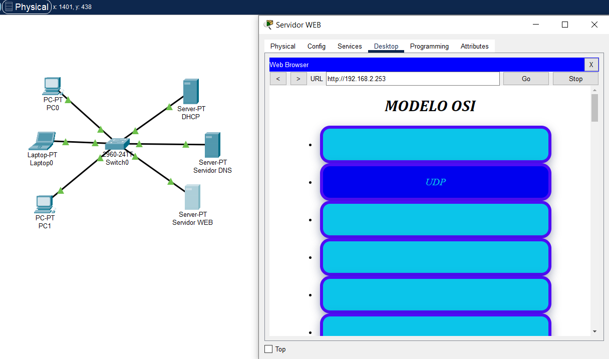

DNS
O DNS (Domain Name System – Sistema de nome de domínio) converte nomes de domínio legíveis por humanos (por exemplo, www.amazon.com) em endereços IP legíveis por máquina (por exemplo, 192.0.2.44).
Para estabelecer uma conexão entre dispositivo e servidor, o protocolo TCP/IP usa um handshake de três vias. O dispositivo e o servidor devem sincronizar e reconhecer os pacotes antes do início da comunicação, então eles podem negociar, separar e transferir conexões. O modelo TCP/IP está dividido em quatro camadas: Camada de aplicação (FTP, SMTP, TELNET, HTTP, HTTPS, etc.); Camada de transporte (TCP, UDP, etc.); Camada de rede (IP);
O Protocolo UDP é um protocolo de comunicação utilizado em toda a internet para transmissões com validade especialmente limitada, tais como reproduções de vídeo ou pesquisas no DNS. Ele acelera as comunicações ao não estabelecer formalmente uma conexão antes que os dados sejam transferidos.
FTP (File Transfer Protocol) é um protocolo de rede para a transmissão de arquivos entre computadores. Dentro do conjunto TCP/IP (Transmission Control Protocol/Internet Protocol), ele é um protocolo da camada de aplicação para o download e upload de arquivos em conexões do tipo cliente/servidor.
O DNS (Domain Name System – Sistema de nome de domínio) converte nomes de domínio legíveis por humanos (por exemplo, www.amazon.com) em endereços IP legíveis por máquina (por exemplo, 192.0.2.44).
O protocolo DHCP é um protocolo de cliente/servidor que fornece automaticamente um host IP (Protocolo de Internet) com seu endereço IP e outras informações de configuração relacionadas, como a máscara de sub-rede e o gateway padrão.
O Protocolo De Transferência De Hipertexto (HTTP) é usado para carregar páginas web da World Wide Web (WWW) em um navegador, como dissemos. Por outro lado, o protocolo HTTPS garante a segurança em um site.

Referente ao hardware, um servidor web é um computador que armazena arquivos que compõem os sites (por exemplo, documentos HTML, imagens, folhas de estilo, e arquivos JavaScript) e os entrega para o dispositivo do usuário final.
PRINT🌹
